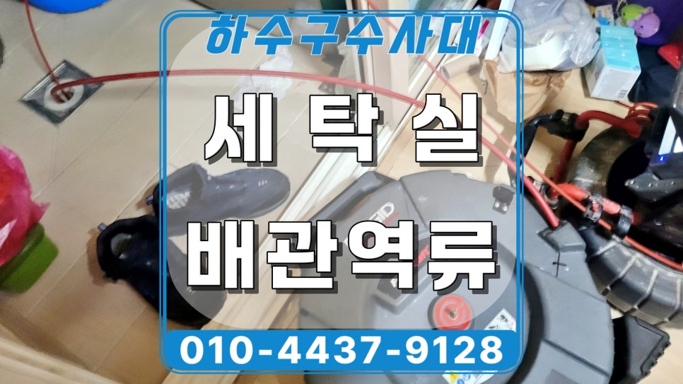
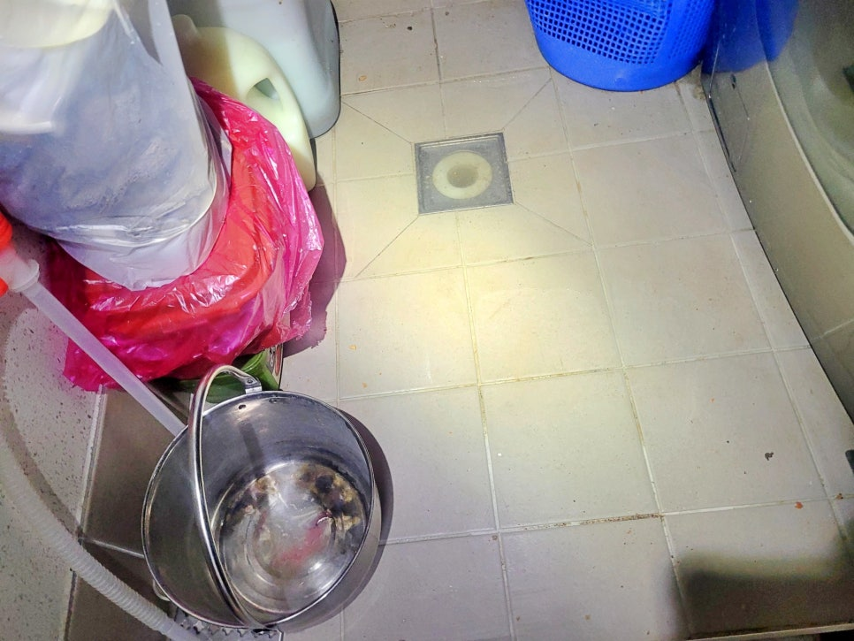
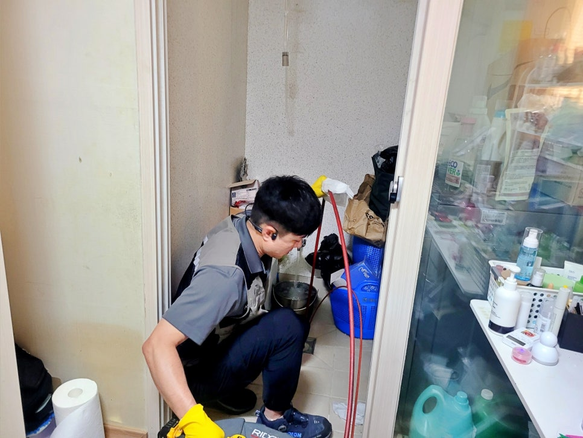
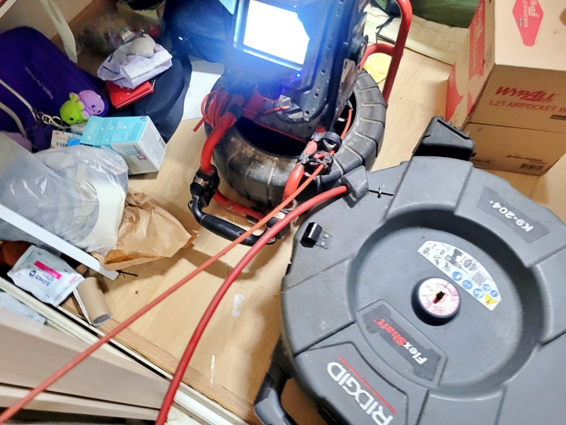
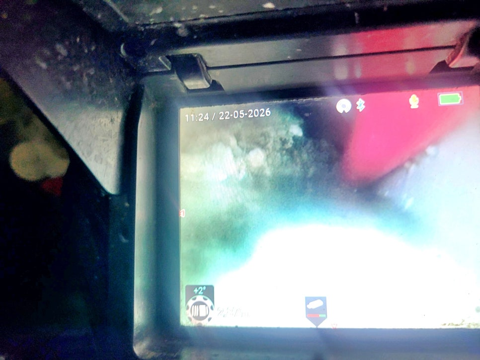
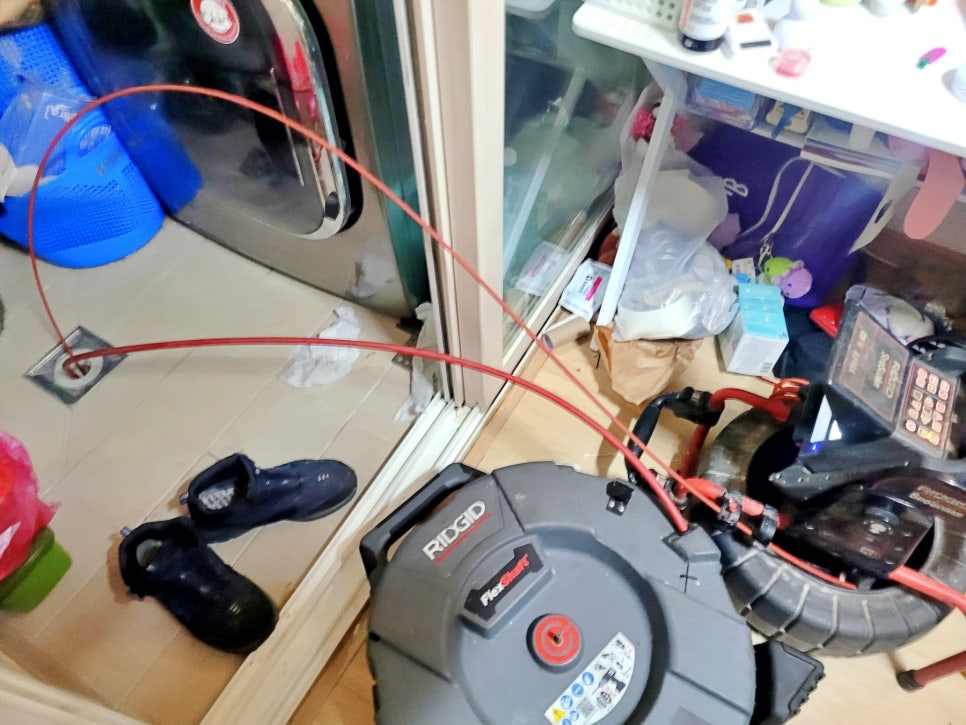
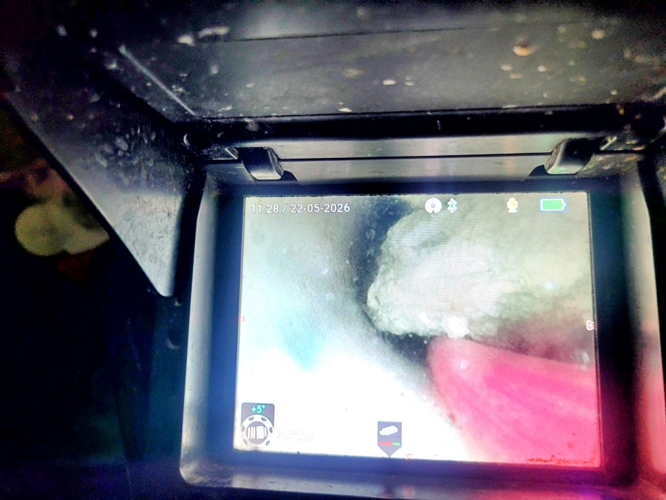

🏠 화성시 병점동 세탁실 배수구막힘, 세탁기 사용시 아래층 역류 발생
화성 병점 하수구막힘 전문 시공 후기

📋 작업 개요
- 위치: 화성 병점, 병점, 화성
- 서비스 유형: 하수구막힘, 배관막힘, 역류해결, 뚫는업체, 배관청소
- 작업 일시: 2026. 6. 8. 9:29
- 업체명: 하수구수사대 (010-5615-2118)
🔍 문제 상황
화성시 병점동 세탁실 배수구막힘,
세탁기만 사용하면 아래층 세탁실에
역류가 발생하는 원인 해결
환영합니다.
화성시 병점동 배수구막힘 역류
청소 전문업체 하수구수사대입니다.
얼마 전 화성시 병점동에 위치한 한 빌라
3층에 거주하시는 고객님께서 급하게
연락을 주셨어요.
화성시 병점동 세탁실 배수구막힘 현장
세탁기를 돌리기만 하면 아래층
2층 세탁실 배수구 쪽으로 물이 계속
역류한다는 난감한 상황이었습니다.
병점동 세탁실 배수구막힘 역류 원인
현장에 도착해서 먼저 2층 세탁실
배수구 상태부터 꼼꼼하게 살펴봤는데요.
단순히 배수가 조금 느린 정도가 아니라,
위층에서 세탁기를 사용할 때마다
아래층 배수구로 물이 계속 밀려 올라오는
전형적인 역류 증상을 보이고 있었거든요.
이런 경우는 단순히 배수구 입구 쪽에
머리카락이나 이물질이 조금 낀 문제가
아닐 가능성이 높습니다.

🔎 원인 분석
💡 전문가 진단: 화성시 병점동 세탁실 배수구막힘,세탁기만 사용하면 아래층 세탁실에역류가 발생하는 원인 해결
특히 저층과 고층이 하나의 배관을 공유하는
빌라 구조에서는 여러 세대의 배관이
합류되는 지점이 문제의 핵심인 경우가
많거든요.
메인 하수구 쪽에 기름때나 정체된 오염물이
가득 차 있으면, 위층에서 내려온 물이
빠져나가지 못하고 가장 낮은 배수구인
아래층으로 역류하게 되는 겁니다.
2층 세탁실 배관 점검 과정
화성시 병점동 세탁실 배수구역류 현장에
내시경카메라를 투입해 안쪽을 들여다보니
예상대로 합류되는 메인 구간에 딱딱하게
굳은 기름 슬러지가 가득 차 있었습니다.
세탁실 배수구는 단순히 세제 물만
지나가는 건 아닌데요.
배관 구조상 생활 배수와 연결되는 지점에는
음식물 찌꺼기나 각종 기름 성분이 섞여
들어가 시간이 지나면서 점차 딱딱하게
굳어버리곤 합니다.
병점동 배수구막힘 배관 청소작업
하수구수사대만의 전문적인 배관 청소
장비를 세팅하고 본격적으로 막힌 구간을
뚫어내는 작업을 시작했습니다.
단순히 무리하게 힘으로 밀어붙이는 방식은

🔧 작업 과정
오히려 하수구 안쪽에 남은 오염물을 더
깊숙이 뭉치게 만들 수 있어서 위험한데요.
샤프트 노즐로 청소하는 장면
그래서 반드시 내시경카메라를 실시간으로
확인하며 정확한 위치를 파악하고 작업
방향을 세밀하게 조절했습니다.
2층 세탁실 배수구막힘 배관청소
작업을 진행하면서 중간중간 다시
내시경카메라를 넣어 하수구 내부를
확인했습니다.
내시경 카메라를 확인하며 청소를 진행함
기름때가 심하게 눌어붙은 구간은 여러 번
반복해서 꼼꼼하게 청소했죠.
화성 병점동 세탁실 배수구막힘 현장은
입구 쪽보다는 메인 배관 합류 지점을
확실하게 소통시키는 것이 가장 중요했기에
그 부분을 집중적으로 공략했습니다.
어느 정도 작업을 마친 뒤에는
실제 세탁기를 돌리는 상황을 가정해서
물을 한꺼번에 내려보내며 테스트를
진행했습니다.
다행히 2층 세탁실 배수구로 더 이상 물이
올라오지 않았고, 하수구 내부를 다시
비춰보니 처음과 비교할 수 없을 정도로
깨끗하게 정리된 모습이었습니다.
마지막으로 내시경카메라를
다시 한번 투입해 물 흐름에 방해를 줄 만한
잔여물이나 큰 찌꺼기가 남아 있지는 않은지
고객님과 함께 확인하고 나니 마음이
놓이더군요.
세탁실 하수구 역류 후기를 마치며
이번 현장은 단순하게 세탁실 하수구 역류
문제로 보였지만, 근본적인 원인은 빌라
메인 배관 합류 구간에 쌓인 기름때였습니다.
하수구수사대는 이번 현장에서 정확하게
원인을 진단하고 그에 필요한 구간을
집중적으로 청소하여 문제를 깔끔하게


✅ 작업 완료
해결했는데요.
하수구나 배관에서 물이 역류하거나 막히는
증상이 생기면 혼자서 해결하려고 애쓰기보다
시작부터 전문 장비를 갖춘 곳에 의뢰하는
것이 시간과 비용을 아끼는 길입니다.
이상으로 화성시 병점동에서 진행한
세탁실 배수구막힘 배관청소 후기를
마치겠습니다.
감사합니다.
#화성시병점동세탁실배수구막힘 #화성병점동하수구막힘 #화성하수구막힘 #병점동세탁실하수구역류 #병점동빌라하수구역류 #화성배관청소 #병점동배관청소업체 #하수구수사대




⚠️ 하수구 배관 막힘 예방 및 관리 가이드
- ✅ 머리카락, 비닐, 물티슈 등 물에 분해되지 않는 이물질은 하수구 유입을 절대 금지해 주세요.
- ✅ 하수구 거름망을 씌우고 모여진 이물질은 주기적으로 쓰레기통에 바로 비워주셔야 합니다.
- ✅ 배관 노후가 심할 경우 이물질이 더 쉽게 걸리므로 주기적인 배관 세척(고압세척 등)을 권장합니다.
- ✅ 작업 후 1년 이내 재발 시 하수구수사대에서 무상 A/S 보증 서비스를 제공합니다.
💡 핵심 정리
- 확실한 장비 작업(내시경 점검 및 샤프트 스케일링)으로 원인을 뿌리 뽑습니다.
- 작업 후 1년 이내에 동일한 부위 재발 시 100% 무상 A/S 서비스를 보장합니다.
- 서울 · 경기 · 인천 전 지역에 24시간 언제든 긴급 출동할 수 있도록 항시 대기 중입니다.
❓ 자주 묻는 질문 (FAQ)
🚨 화성 병점 하수구막힘 문제로 고민이신가요?
정확한 원인 진단과 확실한 시공으로 재발 없는 해결을 약속드립니다.
24시간 긴급 출동 | 서울 · 경기 · 인천 전지역 | 1년 내 재발 시 무상 A/S